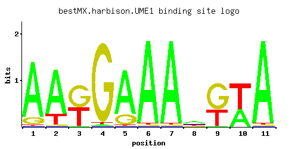

UME1
YPL139C, WTM3
Negative regulator of meiosis, required for repression of a subset of meiotic genes during vegetative growth, binding of histone deacetylase Rpd3p required for activity, contains a NEE box and a WD repeat motif; homologous with Wtm1p, Wtm2p
Best-performing DNA-binding model.

View and copy the recommended matrices ↘
A | 0.868 0.797 0.011 0.011 0.797 0.976 0.976 0.404 0.011 0.404 0.976 C | 0.007 0.007 0.007 0.007 0.007 0.007 0.007 0.221 0.007 0.007 0.007 G | 0.114 0.007 0.543 0.971 0.185 0.007 0.007 0.185 0.614 0.007 0.007 T | 0.011 0.190 0.440 0.011 0.011 0.011 0.011 0.190 0.368 0.583 0.011
A | 86 79 1 1 79 97 97 40 1 40 97 C | 0 0 0 0 0 0 0 22 0 0 0 G | 11 0 54 97 18 0 0 18 61 0 0 T | 1 19 44 1 1 1 1 19 36 58 1
A | 1.00 0.91 -3.37 -3.37 0.91 1.12 1.12 0.23 -3.37 0.23 1.12 C | -3.25 -3.25 -3.25 -3.25 -3.25 -3.25 -3.25 0.21 -3.25 -3.25 -3.25 G | -0.46 -3.25 1.10 1.69 0.03 -3.25 -3.25 0.03 1.23 -3.25 -3.25 T | -3.37 -0.52 0.32 -3.37 -3.37 -3.37 -3.37 -0.52 0.14 0.60 -3.37
Alternative candidate matrices 2
Historical matrix candidates from the original ScerTF database. Expand a source to inspect its original logo, scores, and matrix values.
UME1_AFoat et. al.P = 3.73e-05View matrix ↘
UME1_BFoat et. al.P = 0.0002832View matrix ↘
Gene-level annotations and interactions.
Genes bound in ChIP-chip experiments 1 genes
No Data
Genes affected by TF deletion 173 genes
YBR006W, YGL169W, YGL232W, YGR278W, YMR010W, YML114C, YAL068C, YGR095C, YHR146W, YJL115W, YKL043W, YNL275W, YOR071C, YPL021W, YDR207C, YPR157W, YMR042W, YNR058W, YPL206C, YPL240C, YBR222C, YLR026C, YMR191W, YNL240C, YPL016W, YPR138C, YDL171C, YGR001C, YHR053C, YHR055C, YOL136C, YGL077C, YLR154C, YMR314W, YNL333W, YNL335W, YBR093C, YOL109W, YLR183C, YML022W, YNL334C, YOR160W, YOR132W, YIL090W, YOR261C, YPL182C, YGL019W, YLR033W, YLR438C-A, YLR412W, YOR075W, YGR116W, YDR071C, YHL017W, YIL117C, YJR025C, YJR094C, YNR066C, YPL186C, YDL135C, YEL020C, YFR041C, YJL124C, YOR074C, YOR386W, YGL153W, YMR113W, YOL118C, YOR357C, YJL223C, YLR192C, YMR260C, YMR294W-A, YNR035C, YPL156C, YBR101C, YFL016C, YGR012W, YIR010W, YJR150C, YMR144W, YOL117W, YOL149W, YOR298C-A, YCL027W, YGR219W, YGR253C, YER060W, YLR232W, YNL095C, YNL065W, YOL002C, YDR232W, YGL055W, YHR132W-A, YLR040C, YLR042C, YLR416C, YMR204C, YMR236W, YMR180C, YNL289W, YOR049C, YPL066W, YPR098C, YBL098W, YLR231C, YNL031C, YNL064C, YNL100W, YNR074C, YDR209C, YHR163W, YLR041W, YBR082C, YDR146C, YDR541C, YKL001C, YMR147W, YMR151W, YOL152W, YOL122C, YOR367W, YCL038C, YGR260W, YIL062C, YJR005W, YJL167W, YMR272C, YBR083W, YDR145W, YDR481C, YGR078C, YKL218C, YNR044W, YBL107C, YDR088C, YLR297W, YMR035W, YDR214W, YHR200W, YOR027W, YOR059C, YOR091W, YGL255W, YIL165C, YMR034C, YOL038W, YBR244W, YGR177C, YLR047C, YLR049C, YML018C, YMR181C, YMR243C, YPL040C, YCL004W, YDR492W, YIL044C, YLR174W, YPL134C, YJL046W, YMR098C, YOL161C, YOL101C, YOR342C, YLR173W, YML075C, YML107C, YNL007C, YNL013C, YPL139C, YPR180W